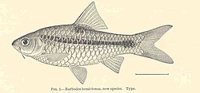

TP1
Puntius hemictenus
Puntius hemictenus es una especie de peces de la familia de los Cyprinidae en el orden de los Cypriniformes.
Morfología
Los machos pueden llegar alcanzar los 10 cm de longitud total.
Hábitat
Es un pez de agua dulce.
Distribución geográfica
Se encuentran en Asia
Bibliografia
Eschmeyer, William N., ed. 1998. Catalog of Fishes. Special Publication of the Center for Biodiversity Research and Information, núm. 1, vol. 1-3.
California Academy of Sciences. San Francisco, Estados Unidos. 2905. ISBN 0-940228-47-5.
Fenner, Robert M.: The Conscientious Marine Aquarist. Neptune City, Nueva Jersey, Estados Unidos : T.F.H. Publications, 2001.
Helfman, G., B. Collette y D. Facey: The diversity of fishes. Blackwell Science, Malden, Massachusetts, Estados Unidos , 1997.
Moyle, P. y J. Cech.: Fishes: An Introduction to Ichthyology, 4a. edición, Upper Saddle River, Nueva Jersey, Estados Unidos: Prentice-Hall. Año 2000.
Nelson, J.: Fishes of the World, 3a. edición. Nueva York, Estados Unidos: John Wiley and Sons. Año 1994.
Wheeler, A.: The World Encyclopedia of Fishes, 2a. edición, Londres: Macdonald. Año 1985.
